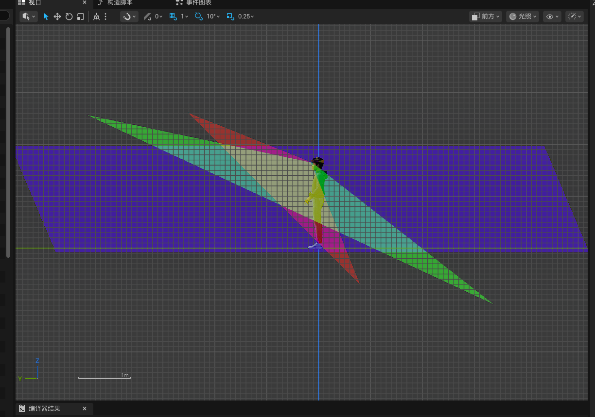
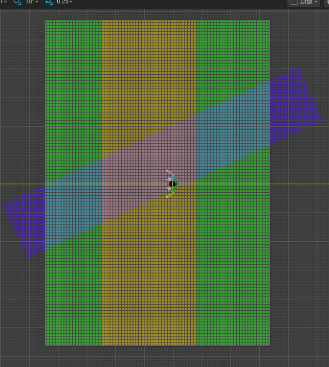
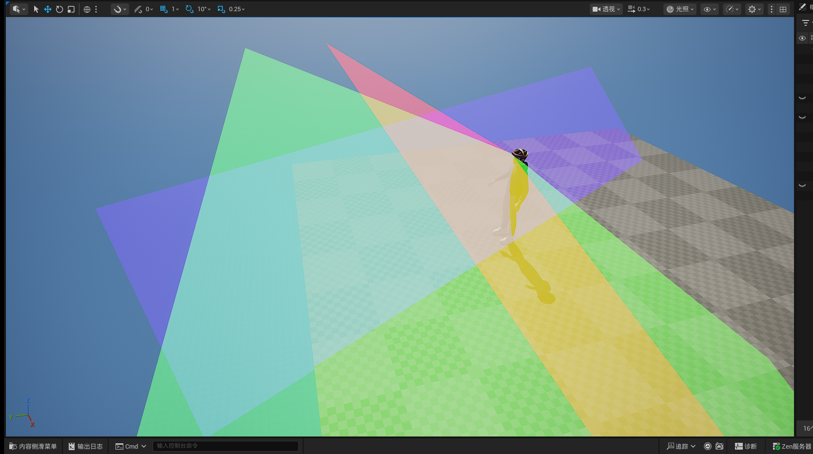
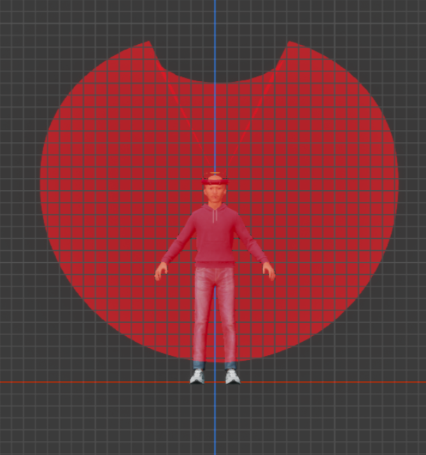
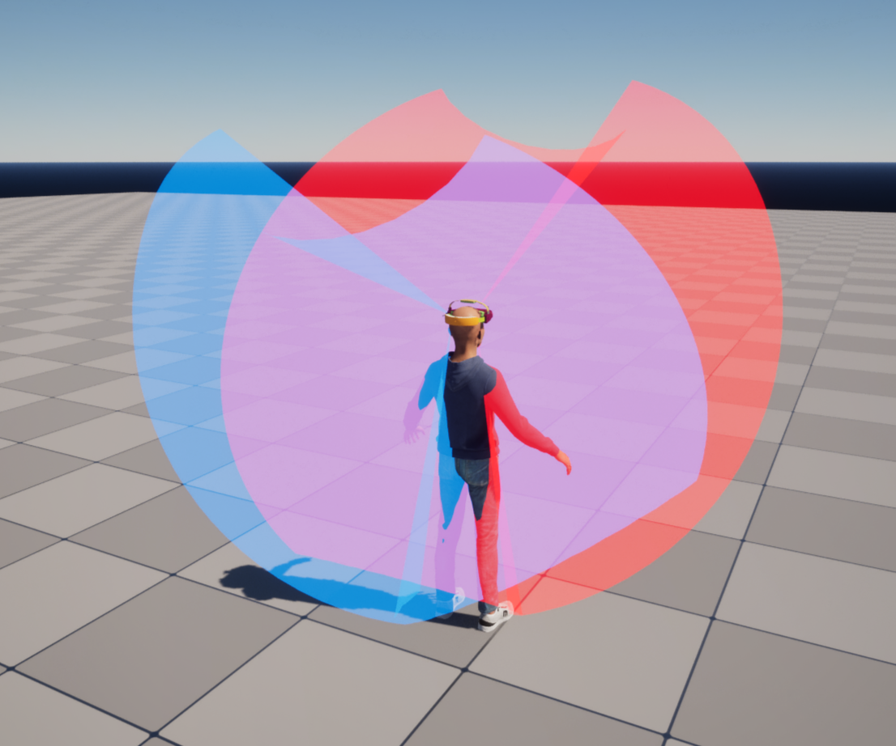
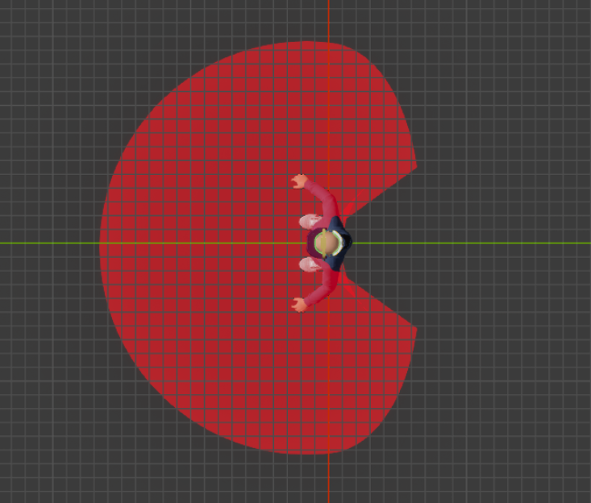
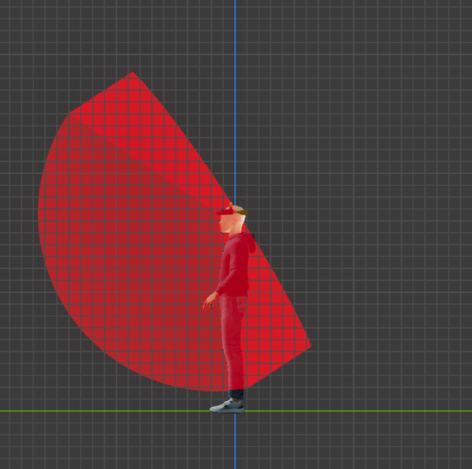
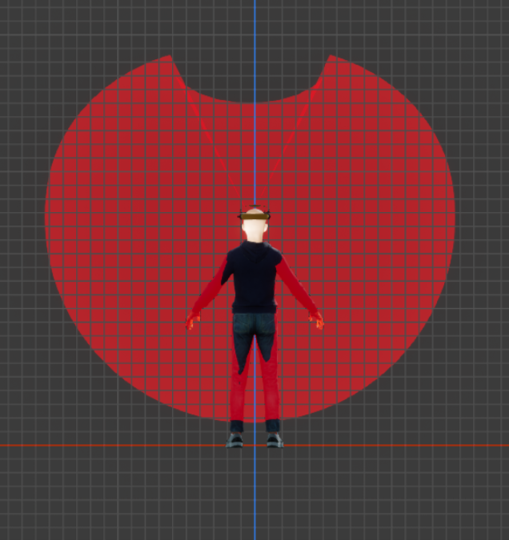

MaxinSights · Optics Intern
High-Precision Frustum Simulation Platform & Fisheye Lens Calibration · 2026.04 – Present
Overview
Built a high-precision frustum simulation platform using the UE5 engine, completing 3D device model integration, MetaHuman skeletal rigging, and motion driving, achieving full-field optical sampling and accurate FOV reproduction under multi-camera arrays. This resolved the traditional mismatch between light cone coverage and human motion in simulations. Calibrated company-selected fisheye lenses using a dual-spherical distortion model, reducing reprojection error to within 0.5 pixels. Implemented a UE5-based restoration pipeline that faithfully reproduces lens distortion based on calibrated parameters, providing critical data support for lens optimization and improved 3D reconstruction accuracy. Additionally, analyzed and traced root causes of imaging anomalies encountered during device calibration.
Visual Showcase
Frustum Simulation
FOV Rectangular Frustum



Wide FOV Conical Frustum




